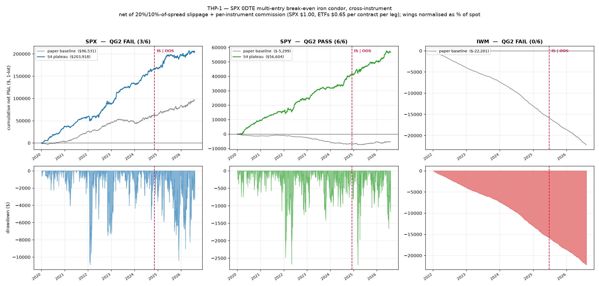
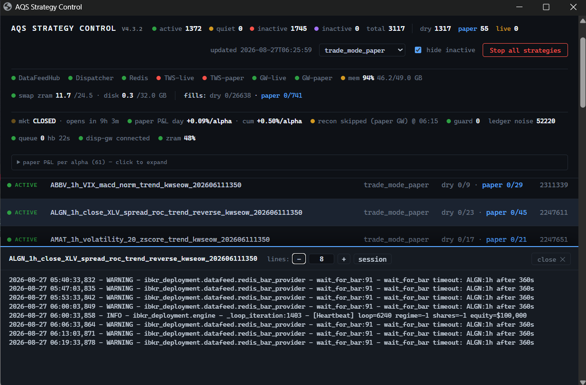
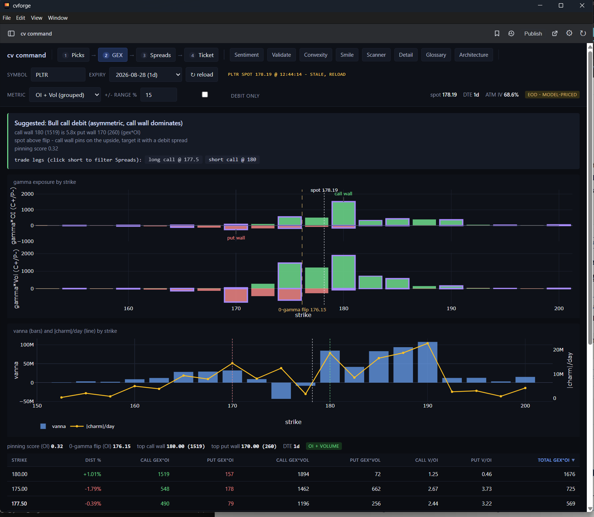
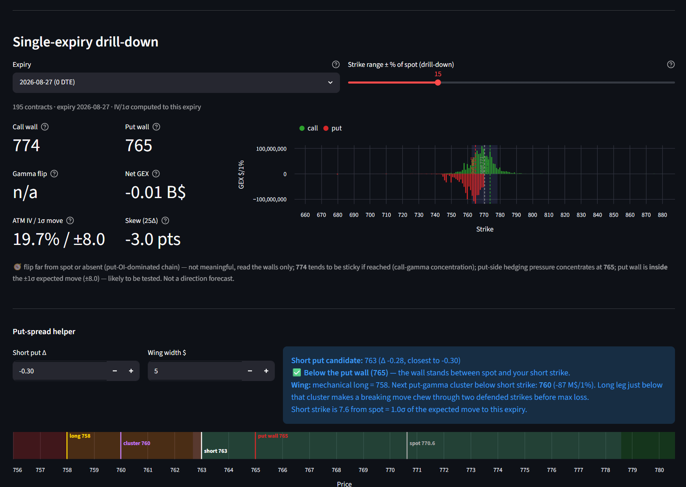

Portfolio — the things I made
I build AI systems that do real work: research pipelines run by LLM agents, production trading infrastructure, and the monitoring that keeps it honest. Everything below was designed, coded and shipped by one person, with AI agents as the force multiplier.
$ pipeline history THP-1 · 0DTE break-even iron condor
| S1–S4 | research → optimisation | hypothesis · data · IS/OOS backtest · plateaus | done |
| QG2 | stress test · SPX | walk-forward · Monte Carlo · random baseline | 3/6 FAIL |
| QG2 | stress test · SPY | walk-forward · Monte Carlo · random baseline | 6/6 PASS |
| QG2 | stress test · IWM | walk-forward · Monte Carlo · random baseline | 0/6 FAIL |
| → SPX, IWM killed — SPX had the best paper P&L · SPY deployed | |||
| fleet: 3,117 built · 1,372 active · 55 on paper · graduating to live · target 1,000 | |||
A real run, shown in full below. Most strategies die at the gates — that is the point. The verdict decides, not my attachment to the idea.
3-minute system walkthrough
One live system · in production since April 2026
Shown in three parts because each part is a different kind of build: an agentic research factory, the production engineering beneath it, and the operations layer that lets one person run a growing fleet.
…and live performance feeds the next round of research. One person operates the whole loop.
A pipeline of staged, LLM-based specialist agents — packaged as reusable, GitHub-versioned skills — that turns academic finance research into deployable trading strategies: idea generation into a testable hypothesis, data assembly (including integration of a provider-hosted options data lake, queried through DuckDB at 1-minute resolution), backtesting with realistic costs and an in-sample/out-of-sample split, and parameter optimisation that selects robust plateaus rather than lucky peaks.
Nothing deploys on my enthusiasm. Every strategy faces pre-agreed quality gates — walk-forward analysis, Monte Carlo stress tests, comparison against random baselines — returning a PASS or FAIL verdict.

The Linux environment the survivors run on, engineered end to end: Interactive Brokers Gateway managed under systemd for unattended reliability, Redis-based data-feed and order-dispatch services, and deployment scripts with dry-run modes and risk circuit breakers. Target: 1,000 deployed systematic strategies.
A self-built Streamlit dashboard for fleet health and strategy performance, with automated health checks and Telegram alerting — built so the system reports to its operator rather than the other way around. The user I designed for needs to trust the whole fleet at a glance; that constraint shaped every screen.

Experiments · pre-verdict
Smaller builds exploring new platforms and data sources — currently cvForge, a market-data platform with an in-platform app builder and a data API. Shipped fast, shown honestly, and subject to the same rule as everything else on this page: they earn their place or they get killed.
cv command — an options-analytics workflow built inside cvForge: dealer gamma exposure (GEX), vanna and charm by strike, call and put walls, and pinning scores, wired into a guided flow from picks to spread construction to order ticket. An experiment in how much of a trading decision one screen can carry.

A self-built app on cvForge's data API: single-expiry options drill-down — call and put walls, net gamma exposure, expected move — plus a put-spread helper that turns the numbers into a plain-language read and a price-ladder view. Same data domain, my own stack end to end.

Earlier work · used by others
AI projects delivered through Republic Polytechnic — grant-funded and client-commissioned — where I was the core developer, architecture and implementation, with institutional teams around me.
NLP entity extraction enabling automated approval of submitted medical certificates — estimated to save around 3,000 staff-hours of transaction time a year. Adopted by a commercial user; Gold Award, MOE Innergy Awards 2021.
Computer-vision screening for diabetic foot risk: assesses foot images to flag patients who need early intervention, bringing specialist-style screening into routine care. IP-licensed for real-world use and named RP's Most Innovative Project in 2024.
Computer-vision grading of ginseng for a Singapore TCM trading company: U-Net segmentation and YOLOv8 classification to size and type a 50-slice tray, targeting a sub-3-second read — delivered end to end as a trained pipeline, lighting rig and edge-computing setup. Consultancy completed March 2025.
Operating principles
frame → ship → measure → kill or scale
Start from a one-line problem. Get to something testable fast. Agree the metric before shipping, and let the read — not attachment — decide what happens next. This portfolio is that loop, running: the system above kills most of what it builds, and everything still standing has earned its place.
Background
Before building solo, I spent 20+ years leading AI and technology in higher education: 17 years at Republic Polytechnic in Singapore, rising to Deputy Director of the School of Infocomm — where I founded the institution-wide AI Guild and was core developer on the funded projects above — and most recently a year as Director of Institutional Effectiveness at the UAE's largest applied university, across sixteen campuses.
B.Eng (NTU) · MBA (University of Melbourne) · Certified NVIDIA Instructor · NTU/SCS-certified in AI Ethics and Governance.